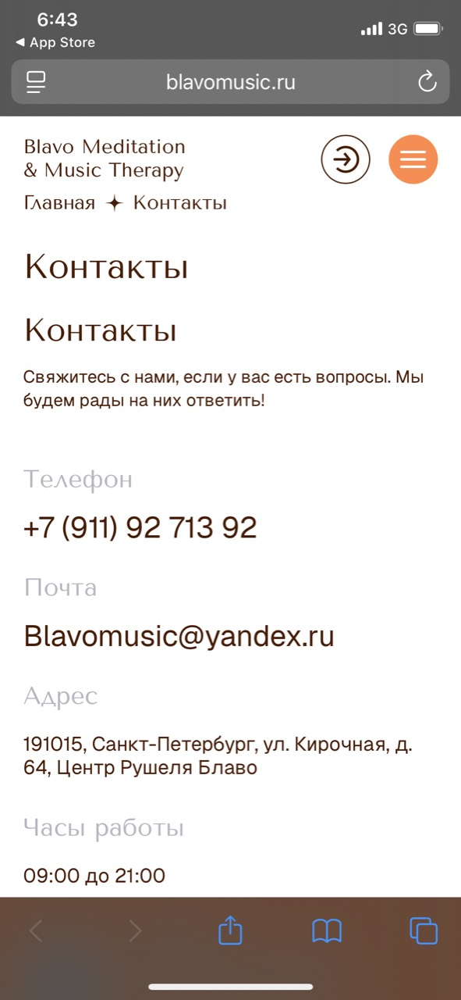
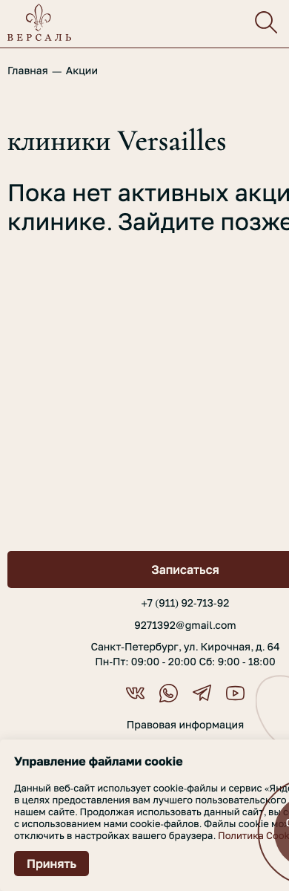

Короткий отчет по Blavo Music
Цель: быстро показать владельцу, что уже проверено, какие проблемы видны пользователю и какой формат работы можно предложить, если сейчас ищут программиста или технического партнера.
Проверено
Сайт, мобильная версия, ссылки на магазины приложений, Android-приложение, поведение без интернета, базовые ответы сервера.
Главный вывод
Проект живой, но выглядит недоделанным: есть проблемы с дизайном, текстами, мобильными экранами и реакцией приложения на отсутствие интернета.
Что мешает
Пользователь может увидеть пустые экраны, кривую страницу контактов, непонятные тексты и неаккуратные ссылки на магазины.
Что проверено
Сайт
- Главная страница, каталог, контакты, карта сайта.
- Мобильная и desktop-версия.
- Ссылки на App Store, Google Play, AppGallery, RuStore.
- Внешний вид и простые пользовательские ошибки.
- Отдельно отмечена страница акций у Versailles: страница есть, но активных акций нет, а mobile-текст обрезается.
Приложение
- Android-приложение установлено из Google Play и запущено на эмуляторе.
- Проверен первый запуск, анкета, каталог и карточка товара.
- Проверено поведение без интернета.
- Проверено, какие разделы приложения обращаются к серверу.
Короткие выводы
1. Контакты на iPhone выглядят криво
- Два заголовка “Контакты” подряд.
- Много пустого места и слишком бледные подписи.
- Нижняя панель браузера закрывает часть страницы.
- Нужно привести экран к аккуратному мобильному виду.
{kind=link}

Акции Versailles выглядят плохо на телефоне
- Страница “Акции” открывается, но сообщает, что активных акций сейчас нет.
- На мобильном экране крупный текст обрезается справа.
- Cookie-плашка и нижний блок контактов занимают слишком много места.
{kind=link}

2. Приложение без интернета ведет себя плохо
- На чистом запуске без интернета показывается локальная заставка.
- После нескольких нажатий остается пустой слайд с кнопкой.
- Нет понятного сообщения “нет интернета” и кнопки “повторить”.
3. В текстах есть ощущение черновика
- Welcome-текст выглядит не как готовый пользовательский текст.
- Некоторые названия и описания слишком длинные.
- В приложении встречаются обрезания и повторы.
4. Магазины и ссылки нужно привести в порядок
- RuStore ведет не на карточку приложения.
- Нужно проверить, чтобы все ссылки вели туда, куда ожидает пользователь.
- App Store и Google Play работают, но оформление и развитие страницы приложения можно улучшать.
5. Есть техническая неаккуратность
- Часть ошибок сервера выглядит грубо для внешнего пользователя.
- В приложении есть лишние служебные логи.
- Это не выглядит как критичная дыра, но требует уборки.
Что можно предложить владельцу
Я бы предложил сотрудничество не как “одну правку”, а как работу из 5 понятных блоков: сначала быстро навести порядок, потом помочь с развитием продукта.
1. Аудит и карта работ
- Собрать все видимые проблемы сайта и приложения.
- Разделить задачи на срочные, важные и “на потом”.
- Понять, кто сейчас отвечает за сайт, приложение, дизайн и продвижение.
- На выходе: короткая таблица задач и оценка по времени.
2. Тестирование и аналитика
- Самостоятельно проверить работу разработчиков и текущей сборки.
- Посмотреть, где пользователи могут теряться.
- Оценить, сколько времени займут правки: часы, дни, отдельные этапы.
- Согласовать главные цели владельца: продажи, удержание, подписка, рост аудитории.
3. Продвижение и обратная связь
- Сделать простую систему анкет и обратной связи.
- Привлечь студентов и лояльную аудиторию как тестировщиков: дать сценарии, собрать замечания и отзывы.
- Попросить участников оставлять честные отзывы в магазинах приложений после реального тестирования.
- Можно провести небольшой хакатон или тестовый день: найти идеи, ошибки и понятные улучшения продукта.
4. Быстрые мелкие правки
- Поправить явные визуальные ошибки.
- Привести контакты и мобильные страницы в порядок.
- Починить неправильные ссылки.
- Добавить нормальное сообщение при отсутствии интернета.
5. Кабинеты, статистика и развитие
- Проверить App Store Connect: карточку приложения, скриншоты, отзывы, аналитику, сборки и доступы.
- Проверить Google Play Console: установку, ошибки, отзывы, статистику, страницу приложения.
- Проверить Firebase: события, crash reports, push-уведомления, доступы и настройки проекта.
- Настроить регулярное наблюдение за статистикой и мелкое редактирование страниц/карточек.
- Продумать, что именно делать с ИИ: рекомендации, подбор музыки, персональные сценарии, анализ анкет.
- Отдельно обновить дизайн ключевых экранов и оформление App Store/Google Play.
Проверка безопасности сайта
- Отдельно проверить сайт и API на базовые риски: доступы, формы, ошибки, открытые файлы, права пользователей.
- Проверить, не раскрываются ли лишние технические данные.
- Проверить резервные копии, админки, старые домены, формы обратной связи и защиту от спама.
- На выходе дать простой список: что опасно, что просто неаккуратно, что можно исправить позже.
Вопросы владельцу
- Какая главная цель на ближайшие 1-2 месяца?
- Что важнее: продажи, подписки, аудитория, имидж или проверка идеи?
- Есть ли доступ к текущим разработчикам, исходникам, App Store Connect, Google Play Console и Firebase?
- Нужно ли просто следить за статистикой и мелкими правками или брать развитие продукта целиком?
- Что именно хочется получить от ИИ в продукте?
Предлагаемый первый шаг
Начать с короткого этапа на 3-5 дней: проверить текущие доступы, сайт, приложение, кабинеты App Store/Google Play/Firebase, статистику и безопасность. Затем собрать список правок, закрыть самые заметные ошибки и подготовить понятный план развития. После этого уже решать, идти ли в большой редизайн, развитие приложения, ИИ-функции или продвижение.
Короткий отчет подготовлен на основе проверки от 20.08.2026. Подробный технический отчет: blavo.html.